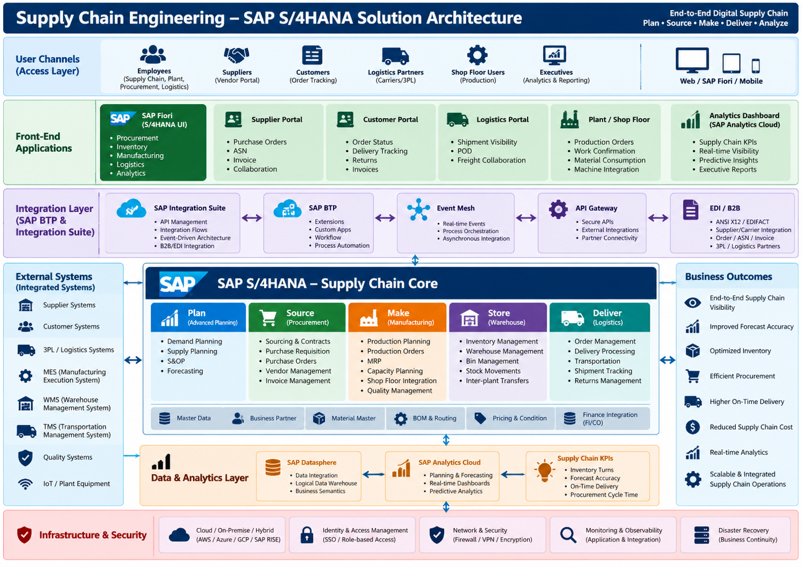

ERP Implementation in Supply Chain Management (SCM)
A program-management view of implementing an integrated SAP S/4HANA supply chain platform—connecting planning, procurement, manufacturing, warehousing, logistics, finance, data and analytics to support end-to-end operational visibility.
1. Introduction
Supply Chain Management spans the movement of materials, information and products from demand planning and supplier sourcing through production, inventory, fulfillment and delivery. When these activities operate in disconnected applications or spreadsheets, organizations can face inconsistent master data, limited inventory visibility, slow planning cycles, manual reconciliation and unreliable delivery commitments.
An ERP implementation establishes a common transactional backbone and standardized business processes. In this scenario, SAP S/4HANA is the supply chain core, integrated with planning capabilities, warehouse and transportation systems, manufacturing execution, supplier/customer channels and analytics. The target is not simply a software replacement; it is a business transformation supported by process redesign, data governance, integration, change management and operational readiness.
2. Core Roles of ERP in SCM
Integrated process execution
Connect purchase requisitions, purchase orders, goods receipts, production orders, stock movements, deliveries, billing and financial postings through controlled end-to-end workflows.
Planning and replenishment
Use demand, supply, inventory and lead-time information to support material requirements planning (MRP), replenishment, production scheduling and exception-based decisions.
Master data and governance
Maintain governed material, supplier/business partner, plant, storage location, bill of material, routing, purchasing and pricing data to improve transaction consistency.
Inventory and traceability
Provide stock visibility by plant and storage location, movement history, batch/serial traceability where applicable, and controls for cycle counting and stock reconciliation.
Financial control
Link procurement, inventory valuation, production consumption, goods movements and order fulfillment with relevant finance and controlling postings.
Performance insight
Support operational dashboards and analytics for inventory turns, supplier performance, forecast accuracy, production attainment, fulfillment and on-time delivery.
3. Key Steps in ERP Implementation
- Define the business case and outcomes: baseline pain points and KPIs; align executive sponsors, business owners and IT leadership on measurable objectives.
- Discover processes and fit-to-standard: map current and target processes across planning, sourcing, production, warehouse and delivery; document gaps, decisions and approved extensions.
- Design the solution and integrations: define organizational structure, module scope, security roles, reporting, interface patterns, environments and non-functional requirements.
- Cleanse and govern data: assign owners, profile source data, resolve duplicates, map legacy codes, define migration rules and agree reconciliation controls.
- Configure, build and integrate: configure standard capabilities first; develop only justified extensions and connect external systems through governed APIs, events, IDocs/EDI or middleware as appropriate.
- Test business scenarios end to end: execute unit, system integration, regression, performance, security, data migration and user acceptance testing with business-owned acceptance criteria.
- Prepare users and operations: deliver role-based training, SOPs, support procedures, cutover rehearsals, business continuity planning and service transition.
- Cut over, stabilize and improve: execute go-live checkpoints, validate transactions and balances, manage hypercare, track defects and transition to steady-state support.
4. Technology Landscape
The target landscape combines an ERP transaction core with user channels, integration services, external operational systems, analytics and secure cloud/on-premises infrastructure. The exact product choices must be confirmed during architecture and fit-to-standard design.

Experience and access
- SAP Fiori and role-based applications
- Supplier, customer and logistics portals
- Mobile access for warehouse and shop-floor users
- Analytics and executive dashboards
ERP and integration
- SAP S/4HANA as the transactional core
- SAP Integration Suite for integration flows and API management, where selected
- SAP BTP for approved extensions and workflows
- EDI/B2B, event-driven and partner connectivity patterns
Operational systems
- WMS and TMS
- Manufacturing Execution System (MES)
- Supplier and customer systems
- Quality, plant equipment and IoT platforms
Data, security and operations
- SAP Datasphere and SAP Analytics Cloud, where appropriate
- Identity and access management
- Network security, monitoring and observability
- Backup, disaster recovery and business continuity
Architecture note: SAP product names and deployment options evolve. Confirm current licensing, product fit, integration capabilities and reference architecture with the solution architect and SAP documentation before committing to a design.
5. Key ERP and SCM Modules
| Capability / Module | Primary role in SCM | Typical processes |
|---|---|---|
| Planning | Demand and supply balancing | Demand planning, supply planning, MRP, S&OP integration and forecasting |
| Procurement / MM | Source and buy materials/services | Requisitions, purchase orders, supplier records, goods receipts and invoice verification |
| Production Planning (PP) | Plan and control manufacturing | BOMs, routings, work centers, production orders, confirmations and material consumption |
| Inventory Management | Control stock and movements | Goods movements, stock transfers, cycle counts, batch/serial tracking where needed |
| Warehouse Management / EWM | Execute warehouse operations | Inbound/outbound processing, putaway, picking, packing, staging and bin management |
| Sales and Distribution / Order-to-Cash | Manage customer fulfillment | Sales orders, availability checks, delivery, shipment and billing |
| Transportation Management (TM) | Plan and execute transportation | Freight planning, carrier selection, shipment execution and freight settlement |
| Quality Management (QM) | Embed quality controls | Inspection plans, quality notifications, results recording and usage decisions |
| Finance and Controlling (FI/CO) | Connect supply chain activity to financial control | Inventory valuation, cost allocation, production variances and financial close |
| Analytics and integration | Connect data and measure performance | APIs, EDI/IDocs, integration monitoring, dashboards and KPI reporting |
Module availability and product boundaries vary by SAP S/4HANA edition and licensed scope. Some capabilities may be implemented in adjacent SAP products or third-party platforms.
6. Major Benefits
End-to-end visibility
Shared transactional data improves visibility into supply, stock, orders, production progress and shipment status.
More reliable planning
Consistent master and transactional data supports more informed replenishment, production and inventory decisions.
Process standardization
Common workflows and controls reduce local variations, duplicate effort and manual reconciliation.
Stronger financial traceability
Integrated postings improve traceability from procurement and production activity to inventory and financial reporting.
Improved service levels
Better order, inventory and logistics coordination can support more dependable customer commitments.
Scalable operations
Governed integration and extensibility can help onboard sites, partners and capabilities without uncontrolled point-to-point growth.
7. Project Implementation Lifecycle
1. Discover and Prepare
Charter, business case, stakeholder map, current-state assessment, scope boundaries, governance, delivery plan, RAID log and resource mobilization.
2. Explore
Fit-to-standard workshops, process design, requirements traceability, architecture decisions, data strategy, integration inventory and sign-offs.
3. Realize
Configuration, approved extensions, integration builds, iterative demonstrations, migration cycles, test automation and defect triage.
4. Deploy
UAT exit, training completion, cutover rehearsal, go/no-go review, production migration, smoke tests, reconciliation and business validation.
5. Run and Optimize
Hypercare, service transition, incident/problem management, KPI monitoring, adoption measurement, backlog prioritization and continuous improvement.
Across every phase, maintain integrated planning across workstreams, dependency management, decision logs, budget and forecast control, vendor coordination, quality gates, change control and transparent executive reporting.
8. Transformation Outcome
The intended outcome is a more connected and measurable supply chain operating model. Benefits should be validated against an agreed baseline and tracked after go-live rather than assumed from implementation alone.
| Outcome area | Illustrative measure | Measurement approach |
|---|---|---|
| Planning effectiveness | Forecast accuracy; schedule adherence | Compare baseline and post-go-live results by product, plant and period |
| Inventory performance | Inventory turns; stockout rate; days of inventory | Use agreed finance and inventory definitions and exclude one-off transition effects where appropriate |
| Procurement performance | Purchase-order cycle time; supplier on-time delivery | Measure from approved process timestamps and supplier delivery records |
| Manufacturing performance | Production attainment; scrap/rework rate | Compare planned versus actual output and quality results |
| Customer fulfillment | On-time-in-full (OTIF); order cycle time | Track confirmed delivery commitments against actual delivery and completeness |
| Data and technology | Migration reconciliation; interface success rate; critical defects | Use signed reconciliation reports, interface monitoring and defect trends |
| Adoption and support | Training completion; active usage; ticket trend | Combine role-based training evidence, usage analytics and service-desk data |
9. Program Management Takeaway
Successful ERP-led SCM transformation is a business-led change program with technology as an enabler. The Program Manager must integrate process, data, architecture, delivery, people and operational readiness into one controlled plan.
- Protect scope and standardization: prioritize fit-to-standard; govern deviations through transparent value, cost, risk and supportability decisions.
- Manage the critical path: track dependencies across data, integrations, environments, testing, business decisions, suppliers and site readiness.
- Make data a workstream: assign accountable owners and enforce quality gates for migration, reconciliation and cutover data.
- Prove end-to-end readiness: test real business flows across ERP and connected systems, including failures, recovery and volume conditions.
- Lead adoption and change: engage process owners, super users, plant/warehouse teams and suppliers early; measure readiness and usage.
- Own go-live governance: define entry/exit criteria, cutover command structure, go/no-go evidence, contingency options and hypercare ownership.
- Measure realized value: transition from project milestones to operational KPIs with named business owners and a post-go-live improvement backlog.
Executive message: An ERP implementation succeeds when it delivers trusted data, reliable end-to-end execution and sustained business adoption—not merely when the software goes live.
Portfolio case study · Illustrative solution narrative for discussion purposes. Final architecture and scope should be validated against business requirements, SAP product documentation, licensing and enterprise standards.